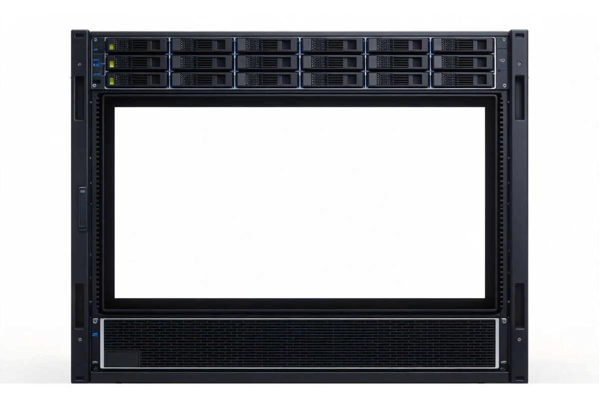
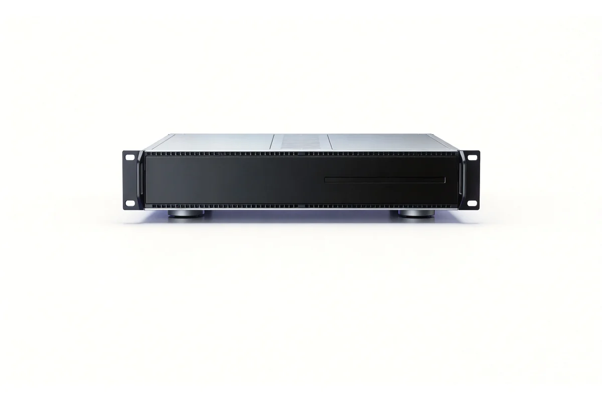
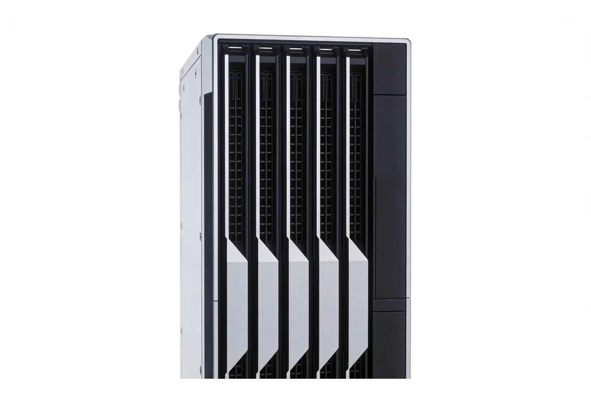
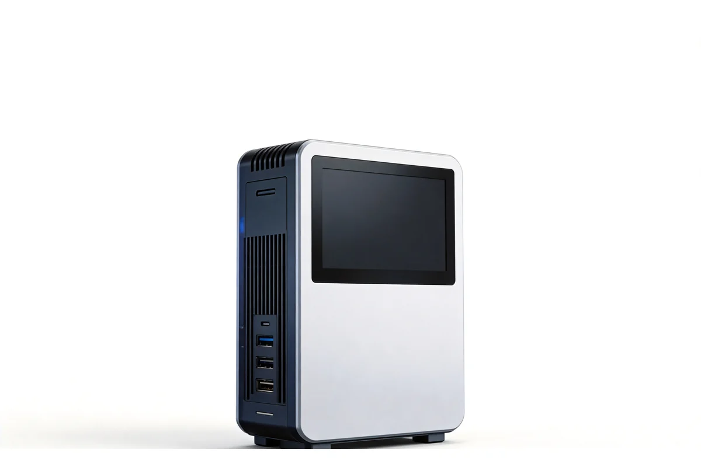

AI servers form a three-tier compute system organised by inference density, rack form factor and cluster scale. They address three problems: insufficient compute for video intelligence, high cost of migrating across heterogeneous platforms, and difficult cluster expansion. The audience is system integrators, industry users and research institutions; the core value is predictable inference throughput within constrained rack space and power budget, together with a portable software stack.
High-density video analytics
A single rack server handles 288 channels of 1080P decoding and intelligent analysis, with multiple inference accelerators per unit, cutting rack space per unit of compute.
Wide-temperature edge deployment
Micro-server form factors use passive cooling and operate from -20°C to +60°C, suitable for non-air-conditioned distribution rooms, toll booths and plant cabinets.
Self-controllable compute base
The general-purpose line uses the open RISC-V instruction set, with dual-die interconnect supporting up to 128 concurrent cores and no ISA licensing constraints; it runs mainstream and domestic operating systems.
Software-hardware co-migration
A one-stop deep learning toolchain supports model migration and quantised deployment for Caffe, TensorFlow, PyTorch, PaddlePaddle, MXNet and ONNX, shortening time to production.
Horizontal cluster scaling
Multiple units form clusters over standard Ethernet with unified management; storage nodes provide close to 100TB capacity for long-retention video and data.
Model Selection
AI servers are organised into categories by form factor and compute tier; the four categories map to different deployment locations, channel counts and compute bases.
AI Servers

Edge inference micro-server
- Single-unit, passively cooled lightweight inference node
- Tiered by 8 or 16 channels of 1080P intelligent analysis
- For edge sites with scattered endpoints and no room air conditioning; select by channel count; choose wide-temperature models for outdoor or hot cabinets

Rack-mounted video analytics server
- Rack-mounted high-density inference device, 288 channels of 1080P decode and analysis per unit
- X86 host controller running the business algorithms
- For centralised analytics in the main equipment room; select by total and concurrent channel counts; allow cabinet power and Ethernet switching capacity

RISC-V general-purpose compute server
- 2U / rack-mounted general-purpose device on the open RISC-V instruction set
- Dual-die interconnect, up to 128 concurrent cores
- For projects that require no ISA licensing constraints; select by concurrent cores and memory; confirm the target software is ported to RISC-V

RISC-V storage and cluster
- Storage nodes and a 42U cluster form
- Close to 100TB capacity per node
- For long-retention video and centralised data storage; plan bays by retention days and data volume; plan clusters by node count and thousand-core scale
Selection Overview
| Application | Equipment Category | Selection Points |
|---|---|---|
| Edge sites with scattered endpoints and no room air conditioning | Edge inference micro-server | Select by channel count; choose wide-temperature models for outdoor or hot cabinets |
| Centralised analytics in the main equipment room | Rack-mounted video analytics server | Select by total and concurrent channel counts; allow cabinet power and Ethernet switching capacity |
| Research and privacy computing requiring no ISA licensing constraints | RISC-V general-purpose compute server | Select by concurrent cores and memory; confirm the target software is ported to RISC-V |
| Long-retention video and centralised data storage | RISC-V storage and cluster | Plan bays by retention days and data volume; plan clusters by node count and thousand-core scale |
Interfaces & Compatibility
Both server types organise interfaces around four capability groups — physical connectivity, network interconnect, software ecosystem and deployment operations — configured by model and form factor.
Physical Interfaces
- RJ45 gigabit management port (BMC / IPMI)
- RJ45 gigabit service ports
- RJ45 console port
- HDMI 1.4a output
- USB 3.0
- VGA
- Hot-swap SATA / SAS bays
- M.2 NVMe system drive
- PCIe expansion slots
- CAN / RS-485 / RS-232 (micro-server form factor)
Network & Interconnect
- Standard Ethernet cluster interconnect
- BMC out-of-band management
- LTE / 5G / Wi-Fi / BT wireless (micro-server option)
- RAID 0 / 1 / 10 / 5 / 50 / 6 / 60
- Dual-die interconnect, 128 concurrent cores (RISC-V series)
- N+1 fan redundancy, 1+1 power redundancy
Software Ecosystem
- One-stop deep learning toolchain (drivers, compiler, inference deployment)
- Caffe / TensorFlow / PyTorch / PaddlePaddle / MXNet / ONNX / Darknet
- Mixed precision: FP32 / FP16 / BF16 / INT8 / INT4
- Video codecs: H.264 / H.265, 8K down to CIF
- Operating systems: Linux, Ubuntu, Kylin, openEuler, deepin
Deployment & Operations
- Unified cluster management service
- Multi-node Ethernet cluster deployment
- Out-of-band remote supervision (BMC / IPMI)
- Passive-cooling wide-temperature deployment (-20°C to +60°C)
- Rack cabinet deployment (2U / 42U)
- Disk array management, data backup and repair
Application Solutions
AI Server can be deeply integrated with AXLTeco software systems and industry solutions to deliver synergistic value.
IBMS
Integrated building management platform for unified monitoring and control.
Core Value:
- System interconnectivity
- Reduced O&M costs
- Improved management
Dashboard System
Real-time data visualization with multi-source integration and custom reports.
Core Value:
- Clear data visibility
- Decision support
- Operational transparency
Smart City
Advantages & Guarantee
Clear density and channel tiers
One product line covers 8 to 288 channels, so a configuration is set directly by channel count and algorithm complexity.
Passive-cooled edge units
Micro-server form factors need no room air conditioning, cutting room retrofit spend.
Open instruction set base
The RISC-V compute line avoids ISA licensing constraints and runs mainstream and domestic operating systems.
One-stop toolchain
Drivers, compiler and inference deployment are covered, lowering model migration cost.
Clusters from a single unit
Units join clusters over standard Ethernet, so capacity grows without an architecture change.
Requirements assessment
Compute configuration sized by channel count, algorithm complexity and retention period.
Installation and commissioning
Racking, network and cluster configuration, inference performance benchmarking.
Training handover
Cluster management, model deployment, monitoring and alerting.
Warranty
One-year equipment warranty with optional extension, including extended cover for accelerator chips and mainboard core components.
Local response
Local service teams in Nigeria and elsewhere provide technical support, spare parts and on-site maintenance.
Remote operations
7×24 remote support, node status monitoring and proactive fault alerts.